Noise Figure, P1dB and IIP3 of the ADALM-Pluto
What we measured
- Noise figure. With the Y-factor method the Pluto receiver shows NF ≈ 2.4 dB at rf_gain 49.6, 2.7 dB at 40.2 and 9.4 dB at 29.7 (434 and 414 MHz, two different ENR values agree within 0.15 dB). The direct method gives the same values (2.4 / 2.7 / 9.2 dB) once the conversion factor GFS is measured instead of assumed.
- The transmitter was on only two thirds of the time. The raw I/Q captures show that the Pluto transmitter ran out of samples at 8.192 MS/s: bursts of about 1.8 ms separated by 1.5 ms gaps, duty cycle 0.664. Every meter of the flowgraph is a time average, so every tone and every Non reading is 1.78 dB too low. All final numbers on this page are taken inside the bursts.
- No 30 dB pad was in the path. The transmitter was connected to the receiver through the loop-back cable alone, so the level formulas of the manual are used with Apad = 0. The data confirm it: with Apad = 30 dB the noise figure would come out at −27 dB and the receiver noise 27 dB below kT0. The absolute accuracy of all dBm values is that of the nominal Pmax = 6.5 dBm (a few dB).
- Compression is ADC clipping. The gain stays within 0.06 dB of linear up to −0.4 dBFS; harmonics appear only when samples hit ±full scale. A slope-3 region was never observed in the two-tone test, so only a lower bound for IIP3 can be given and the rule IIP3 ≈ P1dB + 9.6 dB does not apply at this gain.
Setup and the data we used
One ADALM-Pluto was both the signal source (TX port) and the receiver under test (RX port), connected by a coaxial loop-back cable and driven by the course flowgraph lab02_combined.grc. The flowgraph generates Gaussian noise, one tone (fc + 300 kHz) or two tones (+300 and +400 kHz) and measures the received signal with five meters: a 400 kHz noise meter centred at fc − 500 kHz and four 10 kHz tone meters at f1, f2, 2f1 − f2 and 2f2 − f1.
| Setting | Value | Note |
|---|---|---|
| Sample rate (TX and RX) | 8.192 MS/s | ENR coefficient 67.39 dB with the pad, 97.39 dB without it |
| Receiver gain settings | 49.6 · 40.2 · 29.7 dB | manual gain, AGC off |
| Centre frequencies | 434 · 414 · 404 MHz | single-tone and two-tone tests at 434 MHz |
| Source amplitudes | a_tone 0.25 · a_noise 0.2 | Pmax = 6.5 dBm nominal (not calibrated) |
| Level model used here | P_tone = −5.54 dBm − A_tx ENR = 97.39 dB − A_tx | equation (2) of the manual with Apad = 0 (see below) |
| Noise meter | ENBW 365.95 kHz | computed from the 197 filter taps; the manual uses 400 kHz (0.39 dB) |
| Tone meters | ENBW 8.35 kHz | 3947 taps, Hamming window |
Three kinds of records were available and all three were checked against each other:
- Data sheets. A typed sheet (final pass) and a handwritten sheet (first pass). The typed values agree with the screenshots and captures to within 0.1 dB. The first pass shows levels 4–9 dB lower and non-monotonic, so it is reported separately and not used for the results.
- 37 screenshots of the flowgraph and of the antenna sweep; a selection is at the end of the page.
- 26 raw I/Q captures (complex float, 0.8–4.1 s each, 3.4 GB in total): 5 with the source off, 8 with noise, 9 single-tone and 4 two-tone. They were re-analysed offline with capture_analysis.py, which reproduces the five meters with the exact filter taps of the flowgraph. The reproduced readings match the sheet (for example Non = −34.60 dBFS computed, −34.64 dBFS written).
Two things the captures revealed
The transmitter worked in bursts
In every capture with the source on, the received envelope switches between the full level and the receiver noise floor. The transmitter and the receiver of the Pluto shared one USB 2 link at 8.192 MS/s in each direction, and the transmit buffer underflowed: the source is on for a median of 1.8 ms and silent for 1.5 ms. The duty cycle is very stable: 0.664 on average, between 0.654 and 0.674 in all 21 source-on captures.
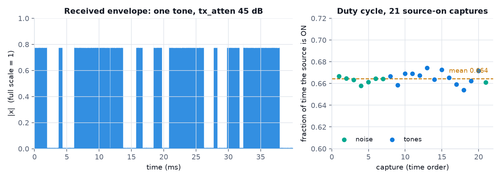
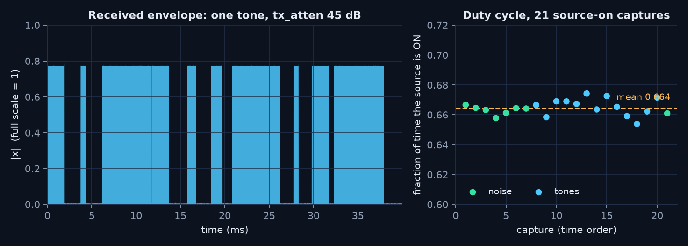
Consequences, all of them visible in the data:
- The meters average over bursts and gaps, so a tone reads 10·log10(0.664) = −1.78 dB low and Non is a mixture of Non and Noff. Uncorrected, the Y-factor is 1.8 dB too small and the noise figure 1.8–2.0 dB too large.
- The on/off switching spreads the tone: in the single-tone test the neighbouring meters (100 kHz away) read −48.7 dBc although nothing is transmitted there. The third-order meters therefore sit on a floor of about −47.7 dBc in the two-tone test.
- The gaps are useful: each noise-on capture contains Noff (gaps) and Non (bursts) taken within milliseconds of each other at exactly the same gain.
The analysis script classifies every 256-sample block as on or off and computes separate spectra from 4096-sample frames that lie completely inside a burst or completely inside a gap. “Inside the bursts” below always refers to these values.
The level model needs Apad = 0
The manual computes the tone power and the ENR at the receiver with a 30 dB external attenuator. In our session the attenuator was not connected: the TX port went to the RX port through the loop-back cable alone. The data show this in two independent ways:
| Check (rf_gain 40.2) | Apad = 30 dB | Apad = 0 dB |
|---|---|---|
| Noise figure from the Y-factor (414 MHz, tx_atten 80, Y = 14.79 dB) | −27.3 dB | 2.7 dB |
| Receiver noise density referred to the input (−123.1 dBFS/Hz and the measured tone level) | −201.3 dBm/Hz | −171.3 dBm/Hz |
| Thermal limit kT0 | −174.0 dBm/Hz | |
A noise density 27 dB below kT0 is impossible, so the formulas have to be used with Apad = 0, as everywhere on this page. Without the pad the largest input level of the session was −45.5 dBm, still far below the −10 dBm limit of the receiver.
Receiver noise floor and the direct method
The noise meter was read with the source off. The sheet was filled at 434 MHz with the RX port open; the captures also give Noff with the transmitter connected (gaps and source-off captures).
| Quantity | rf_gain 49.6 | rf_gain 40.2 | rf_gain 29.7 |
|---|---|---|---|
| Noise power, RX port open (dBFS) | −65.90 | −73.43 | −73.04 |
| NF, direct method as in the manual: Noff + 97.98 (dB) | 32.08 | 24.55 | 24.94 |
| Noise power, transmitter connected, source off (dBFS) | −58.94 | −67.43 | −72.02 |
| Measured conversion factor GFS (dBFS − dBm) | 57.0 | 48.2 | 37.1 |
| NF, direct method with measured GFS and ENBW 366 kHz (dB) | 2.4 | 2.7 | 9.2 |
Why the manual’s formula gives 24.5 dB. It assumes GFS = 20 dB, i.e. 0 dBFS = −20 dBm. We measured GFS with the tone of Part 3: inside the bursts the tone reads −17.39, −12.25, −7.30 and −2.34 dBFS for −65.54, −60.54, −55.54 and −50.54 dBm, so
G_FS(40.2) = 48.2 dB → 0 dBFS = −48.2 dBm (spread of the four points 0.14 dB)
The 28 dB between the assumed and the measured GFS is the whole difference between 24.5 dB and the real noise figure. GFS at the other two gains follows from the measured gain steps (source noise inside the bursts): +8.82 dB from 40.2 to 49.6 (nominal 9.4 dB) and −11.13 dB from 40.2 to 29.7 (nominal 10.5 dB).
Which Noff? With the port open the noise is 6–7 dB lower than with the transmitter connected at the two higher gains (1 dB at 29.7). An open input is not a 290 K matched source, so the open-port reading is not a valid reference: with it the direct method would give −3.3 dB at 40.2. The corrected row above uses the reading with the transmitter connected. The spectra with the port open contain only a small DC line; no interference was visible in the noise band.
Noise figure with the Y-factor method
NF = ENR − 10·log10(10^(Y/10) − 1), Y = N_on − N_off, ENR = 97.39 dB − A_tx
Two source levels were used: tx_atten 60 dB (ENR 37.4 dB) at three frequencies and, to bring Y into the recommended 3–15 dB range, tx_atten 80 dB (ENR 17.4 dB) at 414 MHz.
2.1 The recommended range: tx_atten 80 dB, 414 MHz
| rf_gain | Noff sheet | Non sheet | Y as read | NF as read | Noff in gaps | Non in bursts | Y | NF (dB) |
|---|---|---|---|---|---|---|---|---|
| 49.6 | −58.86 | −45.58 | 13.28 | 4.32 | −58.93 | −43.82 | 15.11 | 2.41 |
| 40.2 | −67.30 | −54.40 | 12.90 | 4.72 | −67.44 | −52.65 | 14.79 | 2.74 |
| 29.7 | −71.98 | −64.77 | 7.21 | 11.09 | −71.98 | −63.28 calc | 8.70 | 9.32 |
Levels in dBFS. “As read” uses the time-averaged meters; the right-hand columns are measured inside the bursts and gaps of the captures. For 29.7 dB there is no noise-on capture, so Non was corrected with the duty cycle: Non = (Navg − 0.336·Noff)/0.664 in linear units.
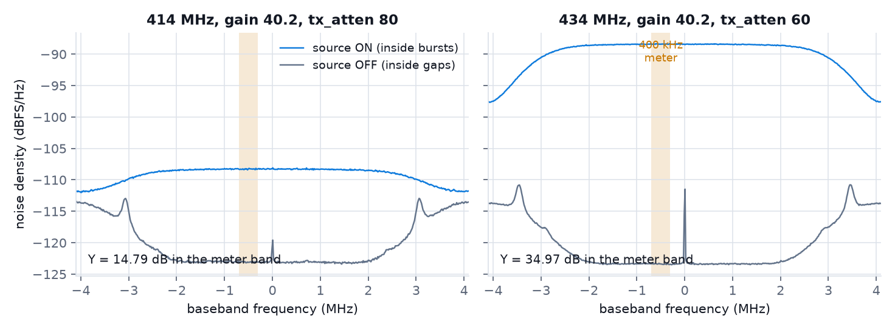
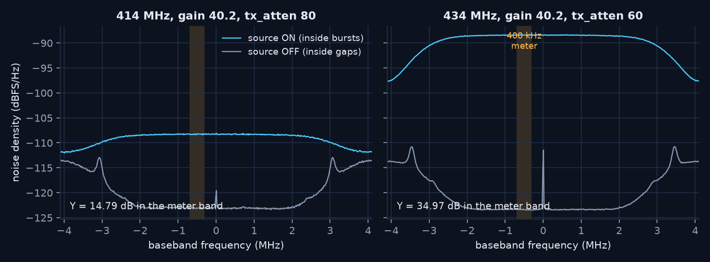
2.2 Table 4 of the manual: three frequencies, tx_atten 60 dB
The sheet lists Non for three frequencies. Each cell below gives ENR / Y / NF in dB, with Non inside the bursts and Noff from the gaps of the same capture.
| Frequency | rf_gain 49.6 | rf_gain 40.2 | rf_gain 29.7 |
|---|---|---|---|
| 434 MHz | −25.78 · 37.4 / 35.19 / 2.20 | −34.64 · 37.4 / 34.97 / 2.41 | −45.76 · 37.4 / 28.26 / 9.13 |
| 414 MHz | −25.93 · 37.4 / 34.83 / 2.56 | −34.65 · 37.4 / 34.42 / 2.96 calc | −46.03 · 37.4 / 27.72 / 9.67 calc |
| 404 MHz | −26.98 · 37.4 / 33.73 / 3.66 calc | −35.93 · 37.4 / 33.20 / 4.19 | −47.18 · 37.4 / 26.57 / 10.83 |
| Result (mean of 434 and 414 MHz, both ENR) | 2.4 dB (2.20–2.56) | 2.7 dB (2.41–2.96) | 9.4 dB (9.13–9.67) |
calc no capture: burst level computed from the sheet value with the duty cycle 0.664 and Noff of the same gain.
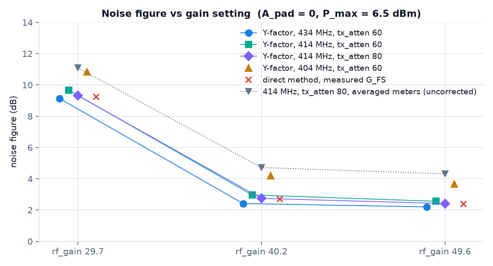
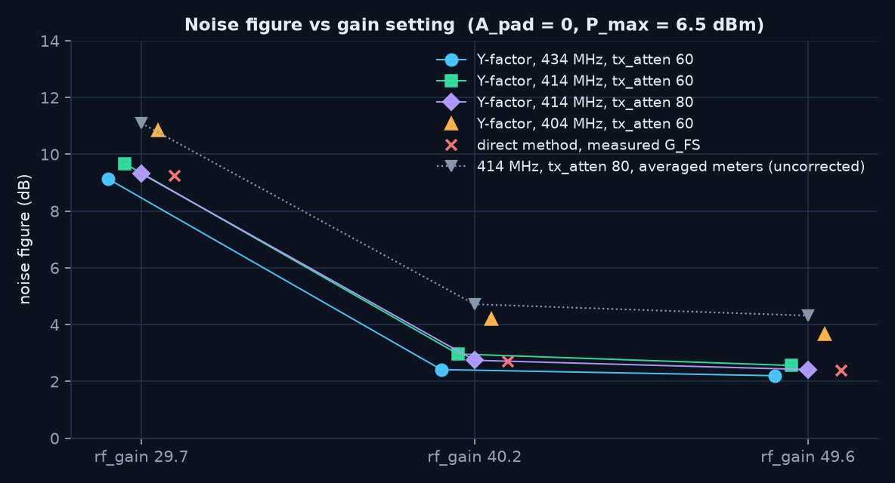
- ENR choice. With tx_atten 60 dB, Y is 27–35 dB: far above the recommended range, so NF ≈ ENR − Y and a reading error of 0.1 dB still costs only 0.10 dB, but the result relies completely on the ENR value and on the linearity of the receiver. With tx_atten 80 dB, Y is 8.7–15.1 dB, inside the range. Both give the same NF (2.56 and 2.41 dB at 414 MHz, gain 49.6).
- Linearity. Between tx_atten 80 and 60 dB the source part of Non (Non − Noff in linear units) rises by 19.96 dB for a 20 dB step at gain 49.6, so the receiver is not compressed by the noise. The highest “on” level was −11.7 dBFS in total; 1 sample in 107 reached full scale.
- The sheet’s Y = 38.79 dB. It compares Non (transmitter connected, −34.64 dBFS) with the open-port Noff of Part 1 (−73.43 dBFS). With the Noff measured in the same configuration (−67.74 dBFS in the gaps) and the burst level, Y = 34.97 dB.
- 404 MHz reads 1.5–1.8 dB higher than 434 MHz at all three gains. A gain-independent offset points to the source (output power of the transmitter 1.5 dB lower at 404 MHz) rather than to the receiver; the method cannot separate the two because ENR is computed from one nominal Pmax.
- Trend. From 49.6 to 40.2 the noise figure rises by only 0.3 dB, from 40.2 to 29.7 by 6.7 dB for an 11.1 dB gain reduction: the noise added after the variable gain takes over, as predicted in the pre-lab.
First-pass sheet (handwritten) — kept for the record
The first pass was taken before the source level was stable. Noff agrees with the final values, but Non is 3–8 dB lower than in the final pass and scatters by up to 7 dB between neighbouring frequencies, and the 3 dB linearity steps come out between 3.6 and 5.1 dB. We could not determine the cause afterwards (a transmit underflow that was stronger at that time would explain it); the values are listed, not used.
| tx_atten 60 dB: Noff / Non (dBFS) | 424 MHz | 444 MHz | 434 MHz |
|---|---|---|---|
| rf_gain 40.2 | −68.25 / −41.5 | −68.22 / −38.27 | −68.28 / −38.19 |
| rf_gain 49.6 | −59.7 / −32.81 | −59.67 / −32.27 | −59.67 / −33.56 |
| rf_gain 29.7 | −72.7 / −52.23 | −72.5 / −54.65 | −72.48 / −47.58 |
| Low ENR | tx_atten | Noff | Non | Y (dB) | Non after −3 dB | Rise of the source part |
|---|---|---|---|---|---|---|
| rf_gain 40.2 | 80.75 | −68.31 | −61.96 | 6.35 | −57.65 | 5.06 dB |
| rf_gain 49.6 | 80.75 | −59.53 | −51.42 | 8.11 | −48.17 | 3.65 dB |
| rf_gain 29.7 | 70.0 | −72.5 | −62.45 | 10.05 | −59.12 | 3.58 dB |
Open-port noise in the first pass: −65.79 (49.6), −73.6 (40.2), −73.30 dBFS (29.7) — within 0.3 dB of the final pass.
Single-tone sweep and input P1dB
434 MHz, rf_gain 40.2, one tone at fc + 300 kHz. Each level was read three times; the standard deviation of the three readings is at most 0.08 dB.
| tx_atten (dB) | 60 | 55 | 50 | 45 | 44 | 43 | 42 | 41 | 40 |
|---|---|---|---|---|---|---|---|---|---|
| Input power (dBm), Apad = 0 | −65.54 | −60.54 | −55.54 | −50.54 | −49.54 | −48.54 | −47.54 | −46.54 | −45.54 |
| Output, f1 meter (dBFS), mean of 3 | −19.25 | −14.08 | −9.11 | −4.21 | −3.20 | −3.19 | −2.11 | −1.80 | −0.84 |
| Output − input (dBFS − dBm) | 46.29 | 46.46 | 46.43 | 46.33 | 46.34 | 45.35 | 45.43 | 44.74 | 44.70 |
| Total level (dBFS), mean of 3 | −19.24 | −14.02 | −9.04 | −4.17 | −3.18 | −3.11 | −2.17 | −1.62 | −0.62 |
| f1 inside the bursts (dBFS), captures | −17.39 | −12.25 | −7.30 | −2.34 | −1.35 | −1.37 | −0.37 | 0.00 | +0.97 |
| Clipped samples inside the bursts | 0 | 0 | 0 | 0 | 0 | 0 | 8·10−7 | 9.0 % | 23 % |
| Third harmonic at −3f1 (dBFS) | −85.8 | −82.8 | −81.3 | −74.7 | −72.9 | −67.6 | −63.2 | −25.9 | −18.0 |
| Deviation from the linear fit (dB) | 0.07 | −0.07 | −0.02 | 0.02 | 0.03 | 1.06 | 1.06 | 1.69 | 1.71 |
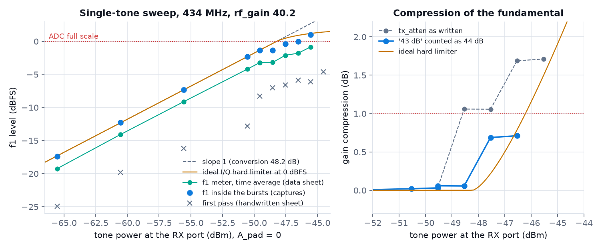
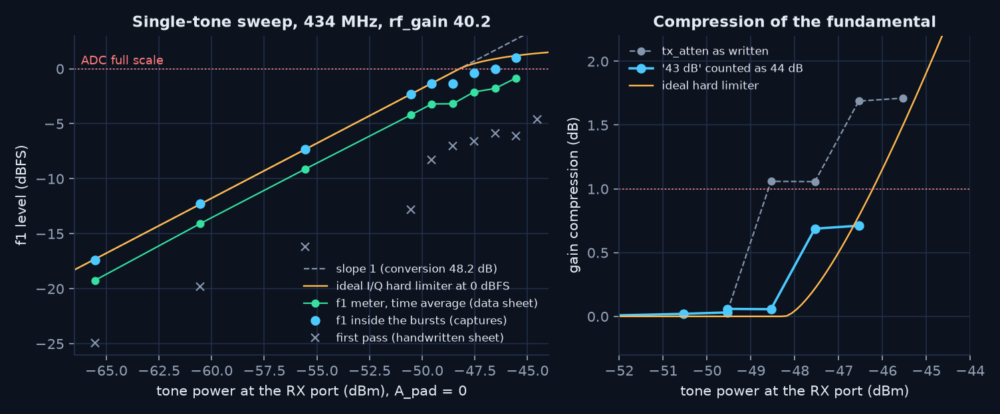
Reading the table. From 60 to 44 dB the output follows the input within ±0.07 dB. The 43 dB and 44 dB columns are identical to 0.01 dB in the sheet, in the screenshots and in the captures (−1.37 and −1.35 dBFS inside the bursts). A real compression cannot remove exactly one step and then follow the input again for the next step, so the 43 dB entry evidently did not take effect and the last four columns are most likely 44, 43, 42 and 41 dB. With that reading the compression is 0.06, 0.06, 0.69 and 0.71 dB.
| Quantity | Value | How it was obtained |
|---|---|---|
| Small-signal conversion (output − input) | 46.4 dB (meter) · 48.2 dB (bursts) | mean of the four points from 60 to 45 dB |
| Tone reaches ADC full scale at | tx_atten 42.7 dB = −48.2 dBm | linear fit of the levels inside the bursts |
| Input P1dB | ≈ −46.2 dBm (tx_atten ≈ 40.7 dB) | full scale + 2.0 dB: hard limiter fitted to the measured points (0.7 dB compression at the highest level) |
| Output level at that point | ≈ +1.0 dBFS in the bursts (−0.8 dBFS on the meter) | fundamental of the clipped tone |
| P1dB with the tx_atten values as written | 43.0 dB = −48.6 dBm | literal reading of the sheet; rejected, see above |
| Value noted on the sheet during the session | tx_atten 40 dB = −45.5 dBm | agrees with the estimate within 0.7 dB |
A 1 dB compression of the fundamental was therefore not quite reached in the sweep; the 1 dB point is an extrapolation with the clipping model (an ideal limiter acting on I and Q loses 1 dB of fundamental when the tone is 2.0 dB above full scale). Taking the model error into account we quote P1dB = −46 ± 1.5 dBm at rf_gain 40.2.
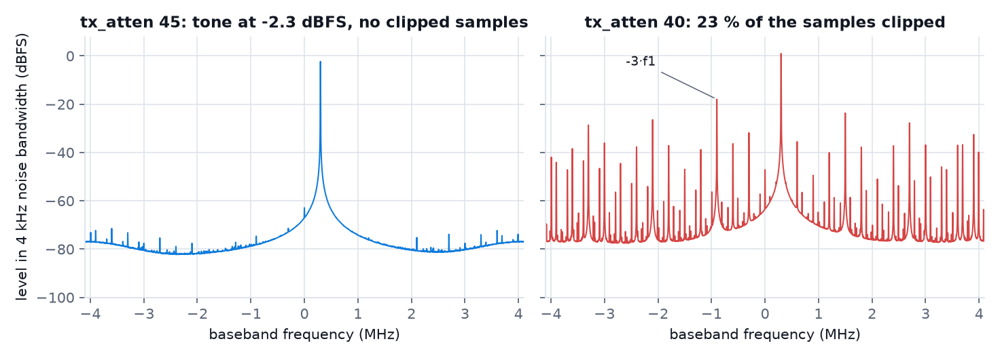
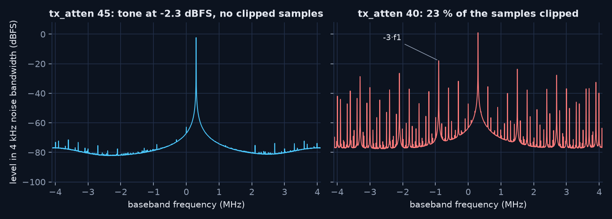
When do unwanted products appear? Up to −0.4 dBFS the second and third harmonics stay below −63 dBFS. One step later, with 9 % of the samples clipped, the third harmonic jumps by 37 dB to −25.9 dBFS and the noise meter rises from −52 to −29 dBFS. The products appear at ADC full scale and not before.
First-pass sheet (handwritten)
| tx_atten (dB) | 60 | 55 | 50 | 45 | 44 | 43 | 42 | 41 | 40 | 39 |
|---|---|---|---|---|---|---|---|---|---|---|
| f1 meter (dBFS) | −24.94 | −19.8 | −16.2 | −12.8 | −8.3 | −7.01 | −6.6 | −5.9 | −6.14 | −4.6 |
| Total level (dBFS) | −21.24 | −17 | −20.5 | −17 | −7 | −5.38 | −5.17 | −5.04 | −26.9 | −5.2 |
Levels 4–9 dB below the final pass and not monotonic (crosses in the figure above); repeated and replaced by the final sweep.
Two-tone test and IIP3
Two equal tones at fc + 300 kHz and fc + 400 kHz, 434 MHz, rf_gain 40.2. The two tone meters always agreed within 0.11 dB (limit 0.5 dB).
4.1 Table 6 of the manual (first-pass sheet)
| tx_atten (dB) | 47.5 | 47 | 46.5 | 46 | 45.5 | 45 | 44.5 | 44 |
|---|---|---|---|---|---|---|---|---|
| Power of each tone at the input (dBm) | −53.04 | −52.54 | −52.04 | −51.54 | −51.04 | −50.54 | −50.04 | −49.54 |
| f1 / f2 meters (dBFS) | −11.72 / −11.72 | −10.79 / −10.80 | −11.92 / −11.93 | −10.99 / −11.10 | −10.96 / −10.98 | −10.19 / −10.21 | −11.24 / −11.25 | −9.86 / −9.88 |
| 2f1 − f2 meter (dBFS) | −57.51 | −50.46 | −49.94 | −44.53 | −40.57 | −36.88 | −35.16 | −32.57 |
| 2f2 − f1 meter (dBFS) | −57.39 | −49.68 | −47.94 | −42.50 | −39.02 | −35.87 | −34.63 | −31.93 |
| Δ (dB) | 45.7 | 39.3 | 36.9 | 32.4 | 28.8 | 26.2 | 23.6 | 22.4 |
| Pin + Δ/2 (dBm) — not a valid IIP3 | −30.2 | −32.9 | −33.6 | −35.4 | −36.7 | −37.5 | −38.2 | −38.4 |
| Line under Table 6 | Value |
|---|---|
| Slope of the third-order products | 7.0 dB/dB (14 dB per 2 dB step) |
| Slope of the tones | 0.38 dB/dB |
| IIP3 | not defined by this table; lower bound ≥ −28.6 dBm (4.2) |
| IIP3 − P1dB | ≥ 17.7 dB |
Pin + Δ/2 falls by 8 dB across the table instead of staying constant, and the products rise 7 dB per dB instead of 3. This is not a weak third-order nonlinearity. With the calibration of Part 3, two tones at tx_atten 47.5 dB are −4.8 dBFS each inside the bursts: their sum peaks at 1.15 × full scale, so every column of this table is already in ADC clipping. Notes on the sheet from the same pass: the third-order meters read −84 dBFS with no signal, and reducing the receiver gain by 10 dB changed a product from −72 to −81 dBFS, i.e. by the gain step — at low level the “products” came with the signal and were not made by the receiver.
4.2 Captures and screenshots of the final pass
| Record | Tones, meter | Products, meter | Δ meter | Tones in bursts | Products in bursts | Δ in bursts | Two-tone peak | Regime |
|---|---|---|---|---|---|---|---|---|
| Capture 12:06:51 | −20.20 | −65.15 | 45.0 | −18.32 | −71.69 | 53.4 | 0.24 FS | source skirt |
| Capture 12:07:23 | −18.09 | −63.15 | 45.1 | −16.15 | −70.10 | 54.0 | 0.31 FS | source skirt |
| Capture 12:09:54 | −10.19 | −55.47 | 45.3 | −8.43 | −64.64 | 56.2 | 0.76 FS | source skirt |
| Screenshot, tx_atten 50 | −9.22 | −43.93 | 34.7 | ≈ −7.4 | — | — | ≈ 0.85 FS | onset of clipping |
| Screenshot, tx_atten 47 | −5.65 | −20.31 | 14.7 | ≈ −3.9 | — | — | ≈ 1.28 FS | ADC clipping |
| Capture 12:08:39 (tx_atten 40) | −4.52 | −17.52 | 13.0 | −2.70 | −15.70 | 13.0 | 1.47 FS | ADC clipping, 26 % of samples |
Levels in dBFS, Δ in dB, capture times in UTC. “In bursts”: line power in spectra taken inside the bursts (4 kHz noise bandwidth). Screenshots give only the averaged meters; their burst level is estimated with the duty cycle.
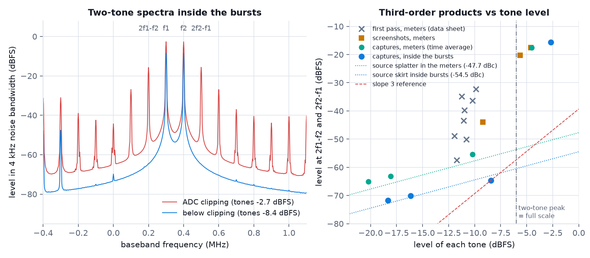
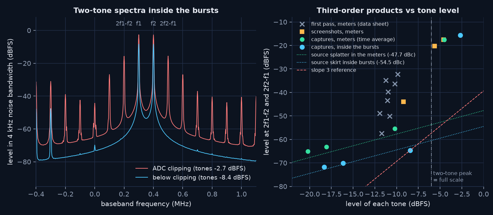
- Below clipping, Δ is constant. Over 10 dB of input the level at 2f1 − f2 and 2f2 − f1 follows the tones dB for dB (Δ = 45 dB on the meters, 53–56 dB inside the bursts). A third-order product would move 3 dB per dB. The single-tone captures explain the floor: with one tone only, the same meters read −48.7 dBc at 100 kHz and −54.6 dBc at 200 kHz from the tone; summed for two tones this predicts −47.7 dBc on the meters and −54.5 dBc inside the bursts. What the meters show below clipping is the skirt of our bursty source, not intermodulation.
- Lower bound for IIP3. At −8.43 dBFS per tone (−56.7 dBm) any receiver-made product is below the skirt, Δ ≥ 56.2 dB, hence IIP3 ≥ −56.7 + 56.2/2 = −28.6 dBm That is at least 19.7 dB above the level that drives the ADC to full scale, so at this gain the analog front end never limits.
- Then the ADC clips. Products appear between a two-tone peak of 0.76 and 0.85 of full scale and reach −13 dBc once the peak exceeds full scale. The spectrum fills with a comb at multiples of the 100 kHz spacing.
- Source test. The first-pass note (−72 → −81 dBFS for −10 dB of receiver gain) and the constant Δ both say the low-level products are not generated in the receiver.
Frequency response of the antennas
Antennas on the TX and RX ports, sweep from 400 to 3000 MHz in 20 MHz steps (131 points) with lab02_antenna_response_gui.py. The curve was digitised from the screenshot of the GUI (the last point reads −63.81 dB against −63.90 dB displayed, so the digitising error is about 0.1–0.2 dB).
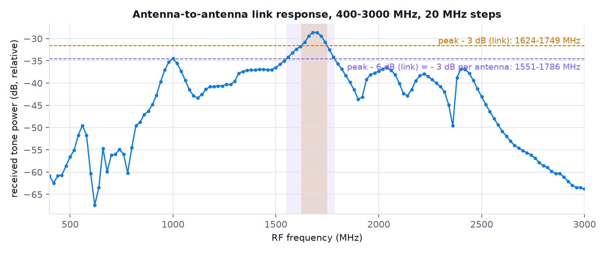
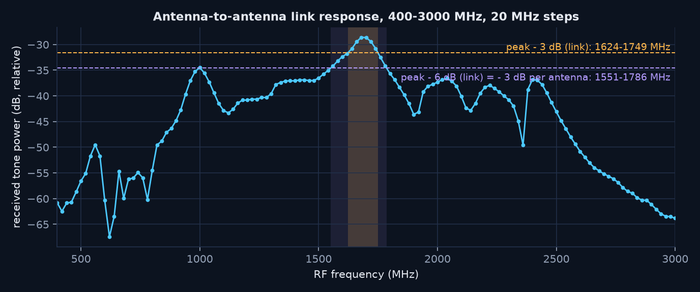
| Quantity | Link, peak − 3 dB (MHz) | One antenna = link, peak − 6 dB (MHz) |
|---|---|---|
| Lower cut-off frequency fL | 1624 | 1551 |
| Upper cut-off frequency fH | 1749 | 1786 |
| Bandwidth BW = fH − fL | 125 | 235 |
The maximum is −28.6 dB at 1680–1700 MHz. The signal passes two antennas, so if both are identical and everything else is flat, the 3 dB bandwidth of one antenna corresponds to the 6 dB bandwidth of the link: 1551–1786 MHz, 235 MHz. Secondary maxima appear near 1000, 2040, 2220 and 2400 MHz, with deep notches at 620, 1900 and 2360 MHz. At 434 MHz, where the rest of the lab was done, the link is 33 dB below its maximum. The notches are too narrow to come from the antennas alone; multipath in the room and the frequency response of the Pluto output are included in this curve, so the numbers describe the link, not the antenna gain.
Noise figure, compression and dynamic range against gain
A. Noise figure and P1dB against receiver gain; the best operating point
P1dB was measured at one gain. Because compression is ADC clipping, P1dB moves with the full-scale input level, and that follows from the measured gain steps. The noise floor is taken in a 10 kHz channel.
| rf_gain | Gain rel. to 40.2 (measured) | NF (dB) | Noise floor, 10 kHz (dBm) | Full scale (dBm) | P1dB (dBm) | P1dB − floor (dB) | Two-tone clip − floor (dB) |
|---|---|---|---|---|---|---|---|
| 49.6 | +8.82 dB | 2.4 | −131.6 | −57.0 | −55.0 | 76.6 | 68.5 |
| 40.2 | 0 | 2.7 | −131.3 | −48.2 | −46.2 | 85.1 | 77.0 |
| 29.7 | −11.13 dB | 9.4 | −124.6 | −37.1 | −35.1 | 89.5 | 81.5 |
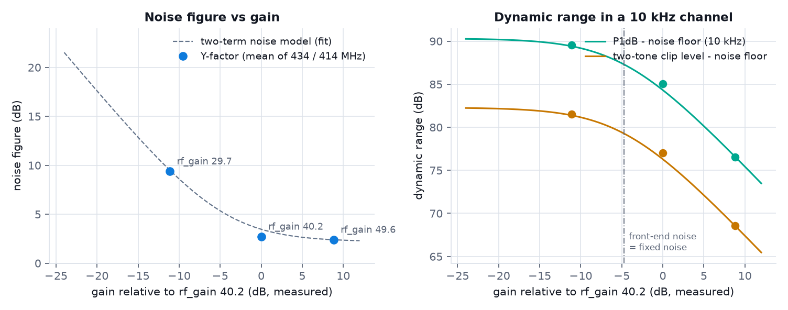
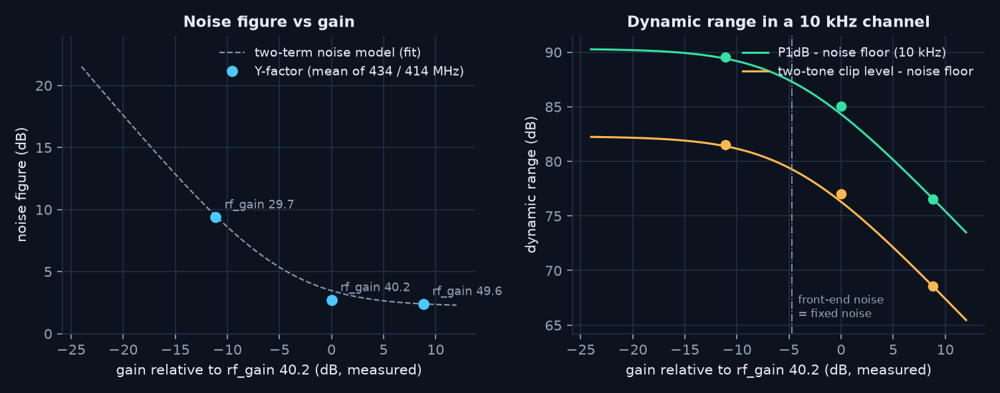
The three Noff values fit Noff = a·G + b within 0.4 dB, with a fixed part b = −73.0 dBFS in the noise meter (−128.7 dBFS/Hz) and a front-end part of −68.3 dBFS at rf_gain 40.2. The two are equal 4.7 dB below the 40.2 setting, at about rf_gain 36.
- 49.6 → 40.2: the noise figure worsens by 0.3 dB and the headroom grows by 8.8 dB. The highest gain buys almost no sensitivity and costs dynamic range.
- 40.2 → 29.7: the noise figure worsens by 6.7 dB for 11.1 dB more headroom; the dynamic range still grows, by 4.5 dB, but the receiver is 6.7 dB less sensitive.
- Below about 30: the fixed noise dominates, the noise figure rises dB for dB and the dynamic range stops growing (model: saturation near 90 dB in 10 kHz).
Operating point. SFDR = ⅔(IIP3 − Nfloor) assumes a slope-3 intercept. With our lower bound IIP3 ≥ −28.6 dBm it gives SFDR ≥ 68 dB in 10 kHz at 40.2, but the usable range is set by clipping, not by the intercept, so the clip-limited columns above are the relevant figures. For weak signals without strong neighbours any setting from 36 to 40 keeps the noise figure within 3 dB of its best value; among the three settings we measured, 40.2 is the best compromise. When strong signals are present, a setting near 30–36 trades up to 6.7 dB of sensitivity for 11 dB of headroom. We have no data from other teams to add to the plot.
B. Output against input
The single-tone curve is in Part 3 and the two-tone lines in Part 4. P1dB (−46.2 dBm, +1.0 dBFS) is marked by the limiter curve. An intercept point cannot be drawn: the product line has slope 1 below clipping (source skirt) and slope 7 above it, never 3. A slope-3 line through the cleanest point is shown only as the lower bound it represents.
C. Direct method against Y-factor
| Method | 49.6 | 40.2 | 29.7 | Needs |
|---|---|---|---|---|
| Direct, manual’s formula (GFS = 20 dB, 400 kHz, port open) | 32.1 | 24.5 | 24.9 | assumed calibration |
| Direct, measured GFS, ENBW 366 kHz, transmitter connected | 2.4 | 2.7 | 9.2 | tone of known power, filter ENBW, matched source |
| Y-factor, averaged meters (414 MHz, ENR 17.4 dB) | 4.3 | 4.7 | 11.1 | ENR, two readings |
| Y-factor, inside the bursts (mean of 434 and 414 MHz) | 2.4 | 2.7 | 9.4 | ENR, two readings |
- The 22–30 dB between the manual’s direct formula and everything else is the assumed GFS (20 dB against 37–57 dB measured), plus 6–7 dB from using the open-port noise and 0.39 dB from the bandwidth.
- Once GFS is measured, both methods agree within 0.2 dB. This agreement tests the receiver and the meters, not the absolute scale: both use the same Pmax. It shows that the tone amplitude, the noise amplitude and the two filter bandwidths are consistent with each other.
- The 1.8–2.0 dB between the averaged and the burst values is the duty cycle of the source. The Y-factor method is immune to the unknown gain and bandwidth, but not to a source that is on for only part of the averaging time.
- The Y-factor assumes the “off” source is a 290 K load. Our “off” state is the output of an idle transmitter; if it delivers more than thermal noise, the true receiver noise figure is lower than quoted. The 6–7 dB difference to the open-port reading does not settle this, because an open port is not a 290 K source either.
Answers to the questions of the manual
Question 1 — What does the direct method need that the Y-factor method does not?
The direct method turns one absolute reading into a noise figure, NF = Noff − GFS − 10·log10Bn + 174, so it needs three things that cancel in the Y-factor ratio:
- the absolute conversion GFS between dBFS and dBm at exactly the gain setting in use, i.e. the receiver gain. For us this was the dominant error: 20 dB assumed, 48.2 dB measured at 40.2;
- the equivalent noise bandwidth Bn of the measuring filter: 366 kHz from the taps, not the nominal 400 kHz (0.39 dB);
- a known source temperature: a matched load at T0 = 290 K on the input, not an open port (6–7 dB difference in our readings).
The Y-factor method needs only the ratio of two readings in the same uncalibrated scale and the ENR of the source; the gain and the bandwidth cancel as long as they are the same for both readings.
Question 2 — Why must Y be neither very small nor very large? Effect of a 0.1 dB error for our smallest Y
NF = ENR − 10·log10(Y − 1) with Y linear, so an error δ in YdB changes NF by −δ·Y/(Y − 1). When Y approaches 1 (0 dB) the factor Y/(Y − 1) grows without limit: 0.1 dB costs 0.47 dB at Y = 1 dB and 0.20 dB at Y = 3 dB, and drift between the two readings matters as much as the reading error. When Y is very large the factor tends to 1 (0.103 dB at 15 dB, 0.100 dB at 35 dB), but the “on” level approaches compression, where Y is read too small and NF too large, and NF ≈ ENR − Y becomes the small difference of two large numbers that depends entirely on the ENR calibration.
Our smallest Y is 7.21 dB (414 MHz, rf_gain 29.7, tx_atten 80, as read from the meters), a ratio of 5.26:
δNF = −0.1 dB × 5.26 / 4.26 = ∓0.12 dB (+0.1 dB → −0.123 dB, −0.1 dB → +0.124 dB)
so NF = 11.09 ± 0.12 dB for that cell as read; with the burst value Y = 8.70 dB the sensitivity is 0.115 dB per 0.1 dB.
Question 3 — Output level at compression and the limiting element
At the compression point the tone is at about 0 to +1 dBFS inside the bursts (−1.8 to −0.8 dBFS on the averaged f1 meter), i.e. at ADC full scale. The limiting element is the converter, not the analog stages:
- up to −0.37 dBFS the gain deviates from linear by only 0.06 dB and no sample is clipped;
- compression starts in the same step in which samples reach ±full scale (9 % of the samples, then 23 %), and the I and Q waveforms are flat-topped at exactly ±1.0;
- the harmonics jump by 37 dB in that one step instead of growing 3 dB per dB;
- the measured compression (0.7 dB with the tone 1.7 dB above full scale) matches an ideal limiter (0.8 dB).
An analog stage that limited first would compress the tone while it is still well below full scale. Since P1dB is tied to the full scale, it shifts dB for dB with the gain setting.
Question 4 — Measured slope, the nonlinear mechanism and the validity of IIP3
The products never rose with slope 3. Below clipping the slope is 1.0 (Δ constant within 0.3 dB over 10 dB of input): this is the skirt of the bursty source. In the clipping region of Table 6 the slope is 7.0 dB/dB (14 dB per 2 dB step) while the tones rise only 0.38 dB/dB. A slope well above 3 with saturating tones is the signature of a hard limiter: the nonlinearity is not a small cubic term a3x³ but an abrupt clipping of the ADC, which creates products of every odd order at once.
The numbers Pin + Δ/2 of Table 6 (−30 to −38 dBm, falling with level) are therefore not a valid IIP3: the intercept is only defined where the products follow slope 3. What the data support is the lower bound IIP3 ≥ −28.6 dBm for the analog front end, limited by our source and not by the receiver.
Question 5 — IIP3 − P1dB compared with 9.6 dB, and why two tones compress earlier
IIP3 − P1dB ≥ −28.6 − (−46.2) = 17.7 dB, well above 9.6 dB. The 9.6 dB rule belongs to a memoryless third-order nonlinearity; here P1dB is set by the ADC full scale, far below the level at which the analog front end would compress, so the two quantities belong to different mechanisms and the rule does not apply at this gain.
Two tones of amplitude A add to a peak of 2A when they are in phase, which happens every 10 µs for 100 kHz spacing: the peak envelope power is 6 dB above one tone although the average power is only 3 dB higher. The ADC therefore clips when each tone is 6 dB below full scale. We saw exactly this: one tone was clean up to −0.4 dBFS, while two tones produced strong products at −3.9 dBFS each (peak 1.28 × full scale) and the first products between −8.4 and −7.4 dBFS each (peak 0.76 to 0.85). In dBm: one tone clips at −48.2 dBm, two tones at about −54 dBm each.
Pre-lab predictions against the measurement
The pre-lab predictions came from the course’s receiver model (an RTL-SDR-like front end with an 8-bit ADC), not from a Pluto, so differences in the absolute values are expected; the mechanisms are what we compare.
| # | Quantity | Prediction | Measured | Relative error | Main source of the difference (size) |
|---|---|---|---|---|---|
| 1 | NF at the highest gain | 6.08 dB | 2.4 dB | −61 % (−3.7 dB) | Model front end (6 dB) is not the Pluto LNA. Uncertainty of our value: Pmax and cable loss, 1 dB per dB, estimated ±2–3 dB; duty cycle ±0.07 dB |
| 2 | Change of NF for 20 dB less gain | +3.4 dB | +7.0 dB (49.6 → 29.7, 19.95 dB) | +105 % | Fixed noise equals front-end noise near rf_gain 36 in the Pluto, about 10 dB higher than in the model |
| 3 | Shift of P1dB for 10 dB less gain | +10.0 dB | +11.1 dB for the nominal 10.5 dB step (full scale) | +11 % (step labels ±6 %) | Real gain steps differ from the labels: 8.82 for 9.4 dB and 11.13 for 10.5 dB. P1dB itself measured at one gain only |
| 4 | Y for ENR 15 dB and NF 7 dB | 8.64 dB | 14.79 dB for ENR 17.4 dB and NF 2.74 dB | — | Different operating point, same relation: 10·log10(1 + 101.739/100.274) = 14.79 dB. As read from the averaged meters: 12.90 dB (duty cycle, −1.9 dB) |
| 5 | NF increase with a 10 dB pad | +10 dB | not measured | — | No attenuator was in the path |
| 6 | Rise of the products for +2 dB per tone | +6 dB, far more if the ADC clips | +2 dB below clipping, +14 dB in clipping | −67 % / +133 % | No slope-3 region exists at this gain: source skirt (−47.7 dBc) below, ADC clipping above |
| 7 | IIP3 − P1dB ≈ 9.6 dB? | only at low gain | ≥ 17.7 dB at rf_gain 40.2 | — | As predicted: the ADC limits first, the rule does not apply |
| 8 | 3 dB band of the antenna link | 808–1792 MHz (983 MHz) | 1624–1749 MHz (125 MHz) | −87 % | The model was a generic band-pass; the real link includes two antennas and room multipath (notches of 10–15 dB) |
Error budget of the final numbers
| Source | Size | Affects | Treatment |
|---|---|---|---|
| Nominal Pmax and cable loss | ±2–3 dB (estimate) | NF, GFS, every dBm value, 1 : 1 | Not calibrated; dominant uncertainty of all absolute values |
| Apad in the level formula | 30 dB | same | The pad was not connected; formulas used with 0 dB (the noise level confirms it) |
| Transmitter duty cycle 0.664 (0.654–0.674) | 1.78 ± 0.07 dB | every averaged tone and Non reading; NF +1.8 to +2.0 dB | Removed by measuring inside the bursts |
| Reference for Noff (open port or connected) | 6–7 dB at 49.6 and 40.2 | direct method, Y | Noff taken with the transmitter connected, in the gaps |
| Noise bandwidth 366 kHz against 400 kHz | 0.39 dB | direct method | ENBW computed from the taps |
| tx_atten entry “43 dB” not applied | 1 dB | last four points of the sweep, P1dB | Columns re-labelled; P1dB quoted ±1.5 dB |
| Frequency response of the source (404 against 434 MHz) | 1.5–1.8 dB | NF at 404 MHz | 434 and 414 MHz used for the result |
| Statistical error of the noise meter (366 kHz, ≥ 0.5 s) | < 0.02 dB | Y | Negligible |
| Digitising of the antenna curve, 20 MHz steps | 0.2 dB, ±5 MHz | fL, fH | Linear interpolation between points |
Screenshots from the session

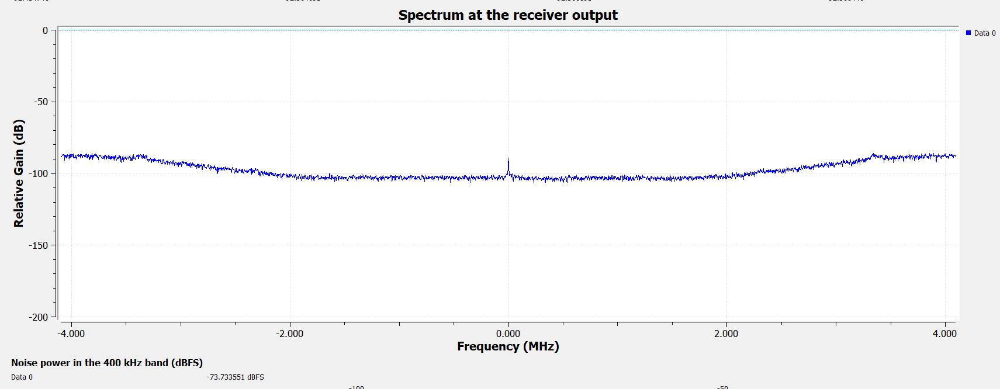

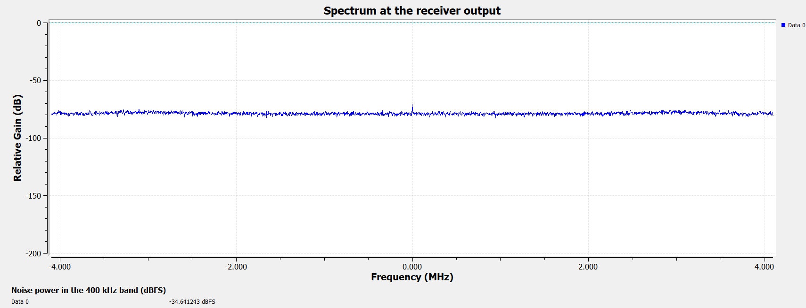

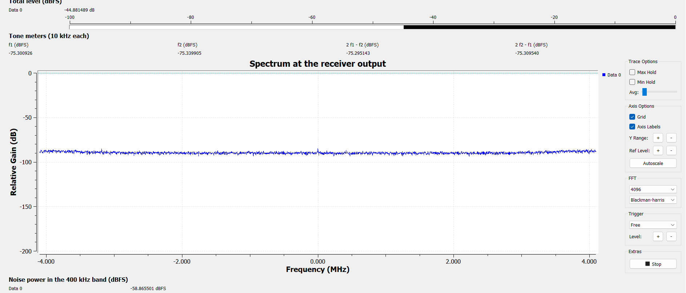

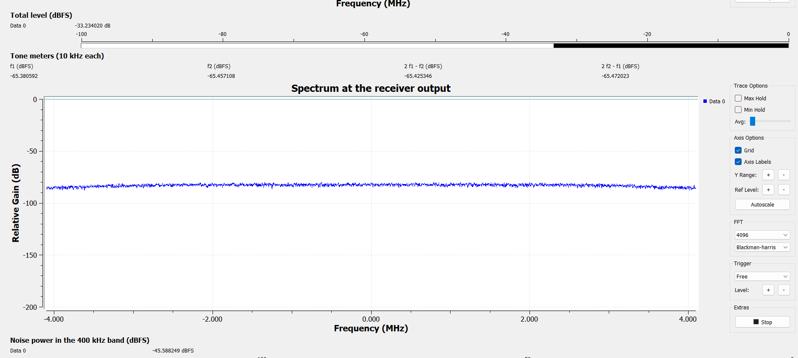

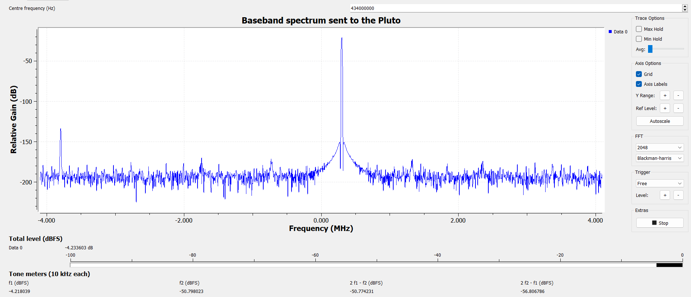

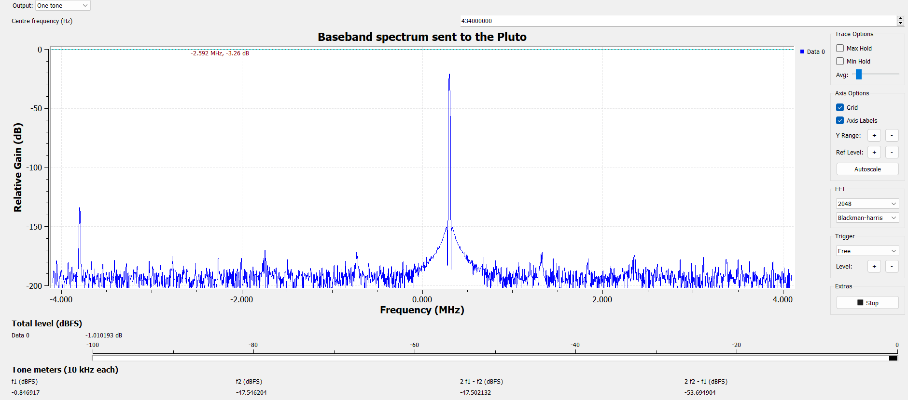

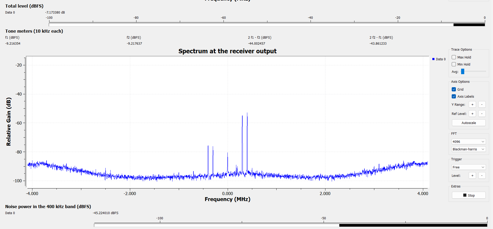

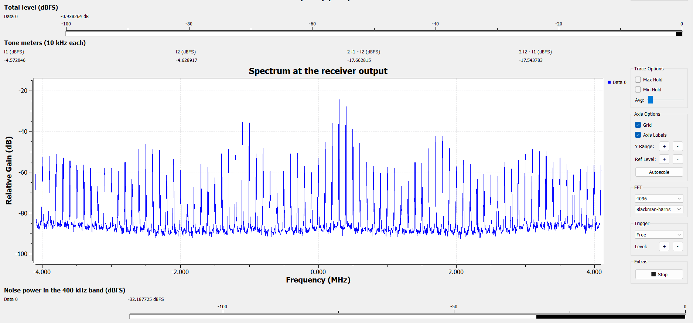

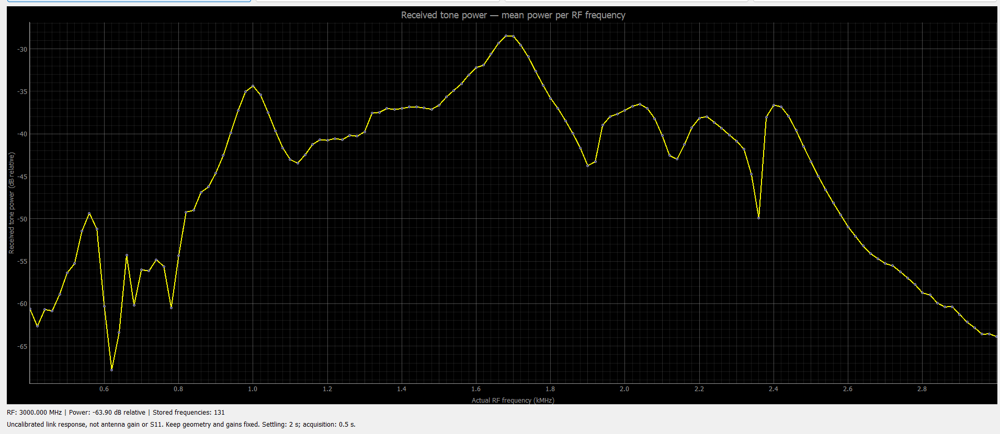
Data and scripts
- Readings of both data sheets: measurements.json · antenna curve: antenna_sweep.json
- Analysis of the I/Q captures (meters, burst detection, spectra): capture_analysis.py → capture_results.json
- Tables and figures of this page: report_analysis.py → report-data.json
- Flowgraph used in the session: lab02_combined.grc · pre-lab report: prelab.html · this report as PDF: report.pdf
- The 26 raw captures (3.4 GB) are too large for this repository; their per-capture results are in capture_results.json.
- D. M. Pozar, Microwave Engineering, 4th ed., Wiley, 2012 — noise and nonlinear distortion.
- Keysight Technologies, “Noise figure measurement accuracy: the Y-factor method,” Application Note.
- B. Razavi, RF Microelectronics, 2nd ed., Prentice Hall, 2012.
- GNU Radio project, GNU Radio Wiki: block documentation, https://wiki.gnuradio.org
- SDR Laboratory, Experiment 2 lab manual, “Noise figure, P1dB and IIP3,” Sharif University of Technology, 2026.